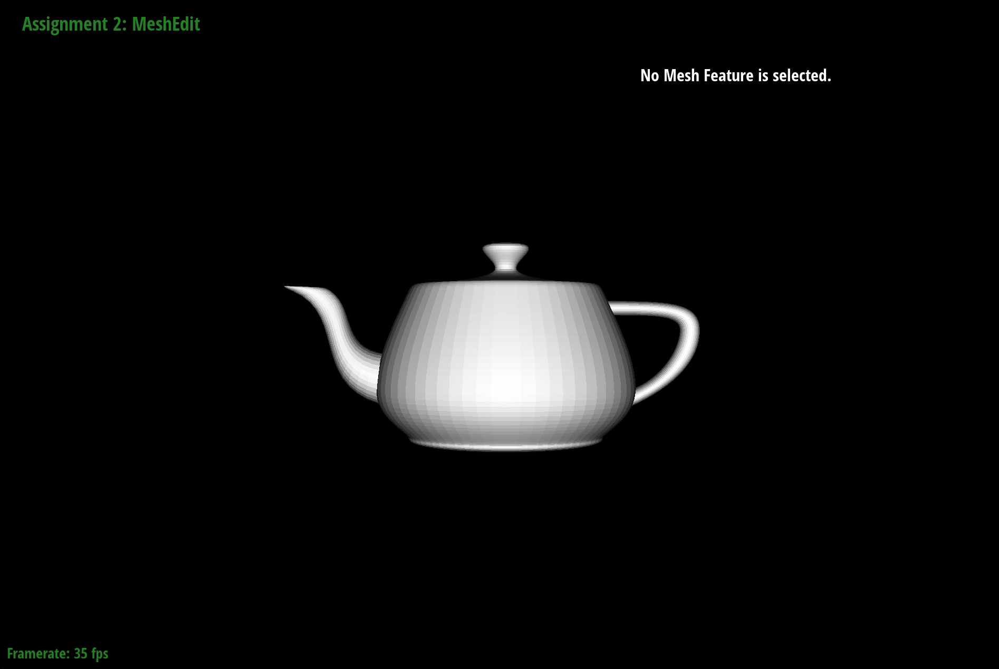

De Casteljau's algorithm is a recursive method used to evaluate Bezier curves. Through repeated linear interpolation, the algorithm allows us to find a point which lies on the Bezier curve at a given parameter t, where t is between 0 and 1.
De Casteljau's algorithm is a recursive method used to evaluate Bezier curves. Through repeated linear interpolation, the algorithm allows us to find a point which lies on the Bezier curve at a given parameter t, where t is between 0 and 1.
Given n control points p1, ..., pn and the parameter t, De Casteljau's algorithm uses linear interpolation to compute n - 1 intermediate control points at t in the next subdivision level. These are p'1, ..., p'n-1, where p'i = (1-t) pi + tpi+1.
This is applied n - 1 times on the previous subdivision level until producing a final singular point which lies on the Bezier curve at t.
In this part, I implemented one level of the algorithm (one level of subdivision) in a function which took in an array of control points and returned an array of control points at the next subdivision level. I iterated through the argument array and applied the lerp function for p'i described above, before pushing this to an array of the new control points.


The De Casteljau algorithm extends to Bezier surfaces through the separable 1D De Casteljau algorithm. The algorithm described above is applied to a n * n grid of original control points, with parameters u and v.
Each row of n control points defines a Bezier curve parameterised by u; the respective final, single point Pi is evaluated recursively for each of n rows using the algorithm in part 1, with u as the argument t.
The n Pi's for each of the n rows then define a Bezier curve with parameter v. This is also then evaluated recursively with De Casteljau's to produce a final singular point which lies on the Bezier surface for given parameters u and v.
bez/teapot.bez evaluated by my implementation
I implemented area-weighted normal vectors at a vertex by iterating through neighbouring vertices, storing two vertex positions A and B at a time, in addition to the original vertex position C. Using these three vertices, I found vectors C - A and C - B, and used their cross product to calculate the normal to the face.
I then found the area-weighted normal by dividing this cross product by 0.5 * its magnitude, and pushed the area-weighted normal to an array of all weighted normals. I repeated this process for each face incident to the vertex. To find the final vector normal, I summed the weighted normals within the array, and divided this summed vector by its own magnitude.

dae/teapot.dae without vertex normals
(default flat shading)

dae/teapot.dae with vertex normals (Phong
shading)
To implement edge flipping, I initiated pointers to every half-edge, face, and vertex. I then reassigned all the half-edges' next, twin, vertex, edge, and face pointers according to the flipped result -- I kept the vertices and halfedges on the sides of the external "diamond" in the same position, but re-assigned the pointer to edge (b, c) to the vertices a and d. The faces (a, b, c) and (b, c, d) then became (a, c, d) and (a, b, d) respectively, and I reassigned the corresponding halfedges based on any face changes. I implemented a check at the beginning of the function to return if the element is at a boundary.
Regarding debugging, my implementation was close to correct on my initial attempt. My "debugging" process mostly consisted of re-reading the assignments for each mesh element, and then catching and correcting some assignments which didn't make sense to me upon the second read.

dae/teapot.dae before edge flips
dae/teapot.dae after some edge flips
For this part, my implementation process was very similar to my implementation of edge flips. I initiated pointers to every relevant mesh element (vertices, faces, halfedges) and re-assigned all their pointers according to the "after split" diagram, including to newly created mesh elements. I created the appropriate new halfedges, edges, faces, and vertex, and assigned all their pointers. Like Part 4, I "re-purposed" the original edge (b, c), this time to become (b, m), and faces (a, b, c) and (b, c, d) became (a, b, m) and (b, d, m) respectively. For the position of m, I added the positions of a, b, c, and d, and then divided this sum by 4.
Errors I encountered here were also related to incorrect pointer assignments in my original attempt, usually to do with assigning to the correct new face and keeping in mind the anti-clockwise direction of the half-edges, since I didn't redraw the diagram. I debugged this again mostly through carefully re-reading my pointer assignments.
dae/teapot.dae before edge splits/flips

dae/teapot.dae with some edge splits

dae/teapot.dae with some edge splits and
flips